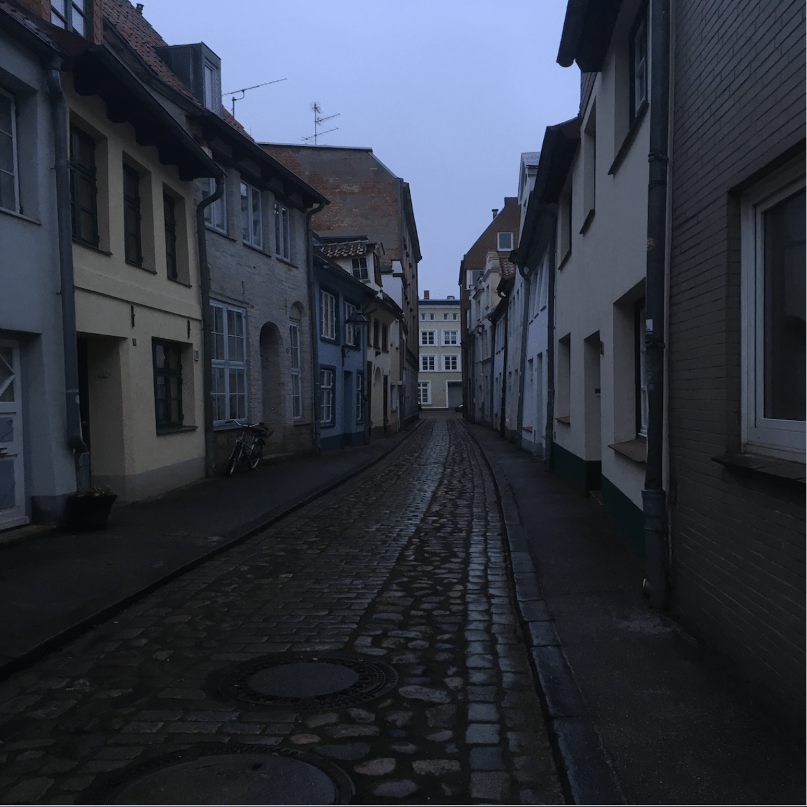
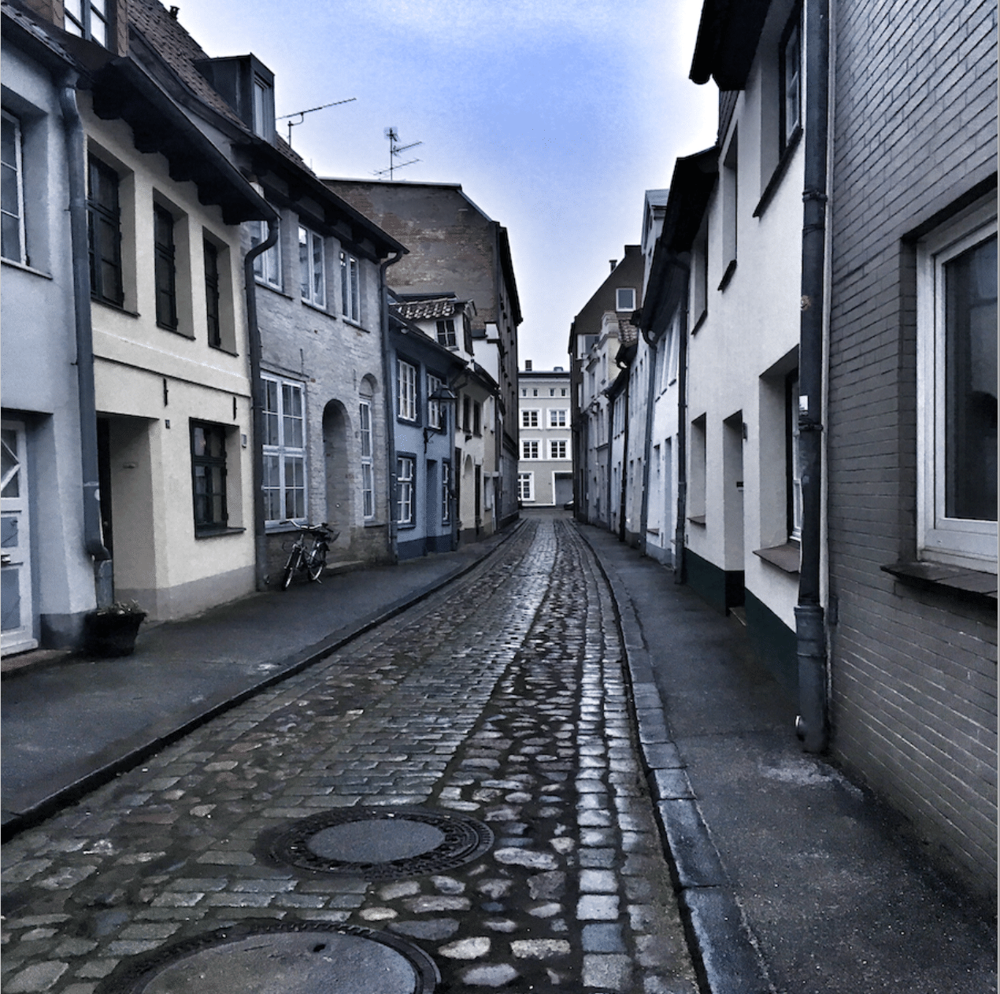

Fototipps
Weißt du schon, wie man ein richtig gutes Foto schießen kann? Wir haben dir einige Tipps zum Fotografieren zusammengestellt.
Beim Fotografieren solltest du unbedingt auf das richtige Licht achten!
Hier wurde direkt in die Sonne fotografiert, sodass das restliche Foto sehr dunkel ist.
Achte darauf, dass das Licht von der Seite oder von hinten kommt. So wie hier:

Experimentiere mit Perspektiven!
Versuche mal die Perspektive, also die Richtung, aus der du fotografierst, zu ändern.
Dieses Bild wurde mit der „Normalperspektive“ aufgenommen, der Fotoapparat fotografiert einfach geradeaus, und folgt deinem Blick.
Bei dem nächsten Bild wurde die „Froschperspektive“ verwendet. Man macht sich dafür ganz klein und hockt sich zum Fotografieren auf den Boden. Dadurch wirkt alles größer und mächtiger.

Gib deinen Fotos mit einem Filter einen besonderen Look!
Filter kann man auf ein Foto „rauflegen“, um sie nachträglich anders aussehen zu lassen. Dafür brauchst du nicht einmal ein Bildbearbeitungsprogramm.
Nutze doch mal analoge Filter: Halte einfach mal einen Gegenstand vor die Kamera, wie beispielsweise eine volle Getränkeflasche oder eine Sonnenbrille.
Bei dem folgenden Foto wurde auf das Originalfoto ein hellerer Filter gelegt.

Knipsclub
Diese und noch viel mehr Tipps rund um das Thema fotografieren findest du unter „knipstipps“ auf der Webseite vom „knipsclub“. Das ist eine Foto-Community in der Kinder zwischen 8 und 12 Jahren aus Deutschland ihre Fotos mit anderen teilen können.
Vielleicht hast du schon mal von Instagram oder Snapchat gehört: Das sind ähnliche Fotoplattformen, allerdings bewegst du dich im knipsclub in einem geschützten Rahmen. Das bedeutet, dass nur andere, die beim knipsclub angemeldet sind, deine Fotos anschauen können.
Kinderfotopreis
Der Kinderfotopreis ist ein Fotowettbewerb für Kinder zwischen 3 und 12 Jahren aus München/ Oberbayern. Dieses Jahr ist das Thema: “rund & eckig”.
Bis zum 15. Mai 2023 kannst du dein Foto zu dem Thema einsenden. Danach schaut sich eine Jury alle Einsendungen an und wählt die überzeugendsten Fotos aus.
Die Preisverleihung vom Kinderfotopreis München/Oberbayern wird am 14. Juli in München stattfinden.
Wenn dir noch mehr Fotografie-Tipps einfallen, melde dich gerne bei der KABU-Redaktion.
Viele Grüße von deinem KABU-Team!